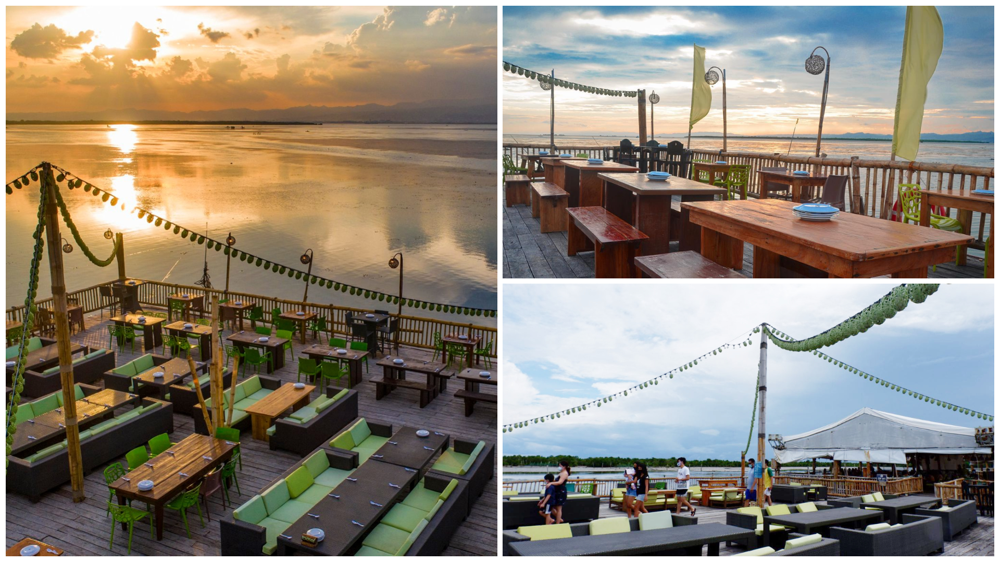
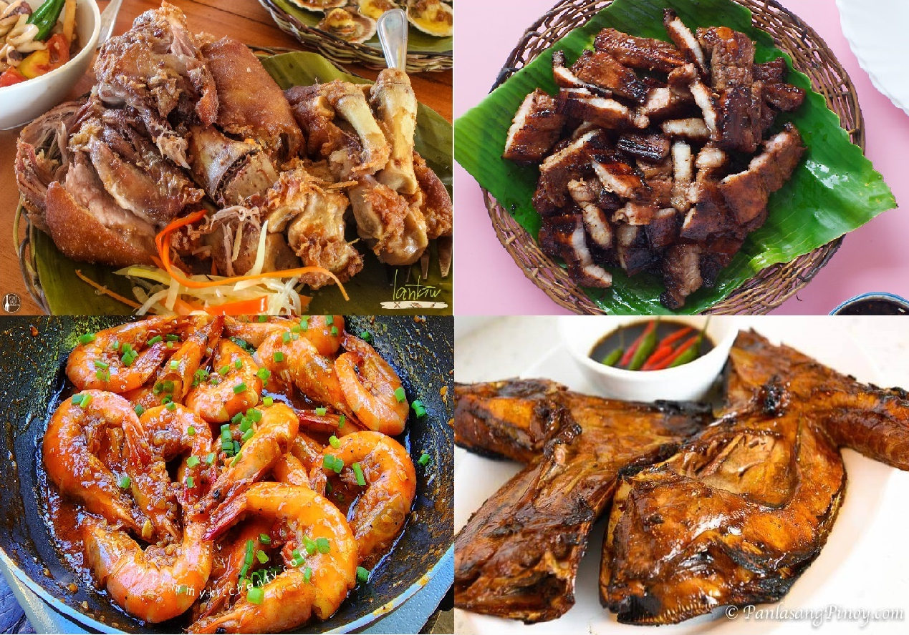
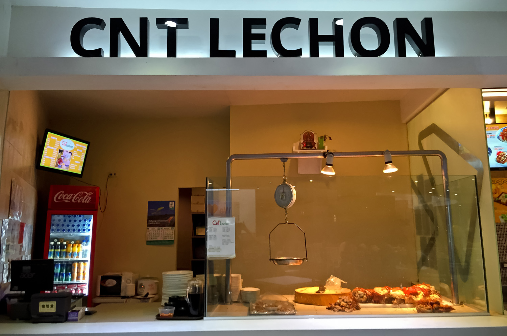
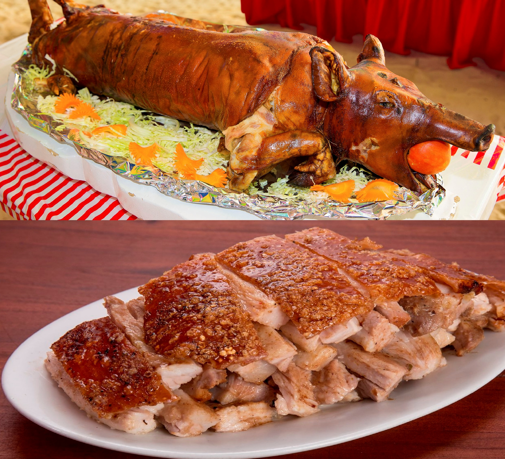
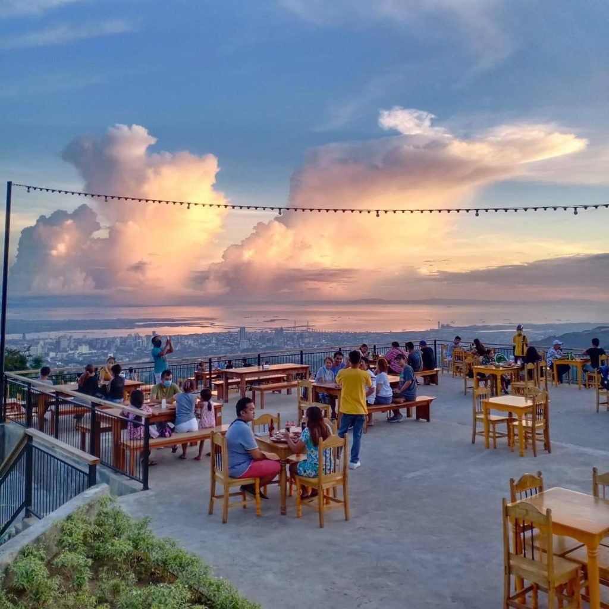
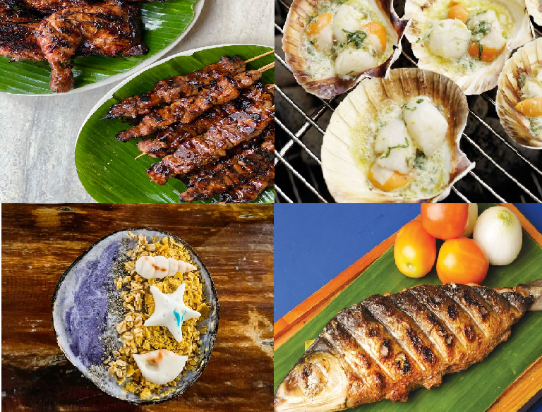
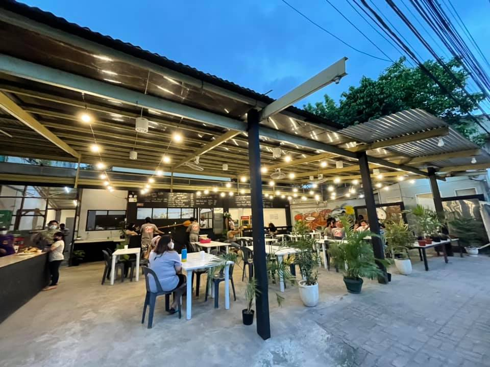
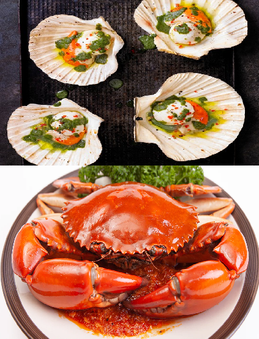
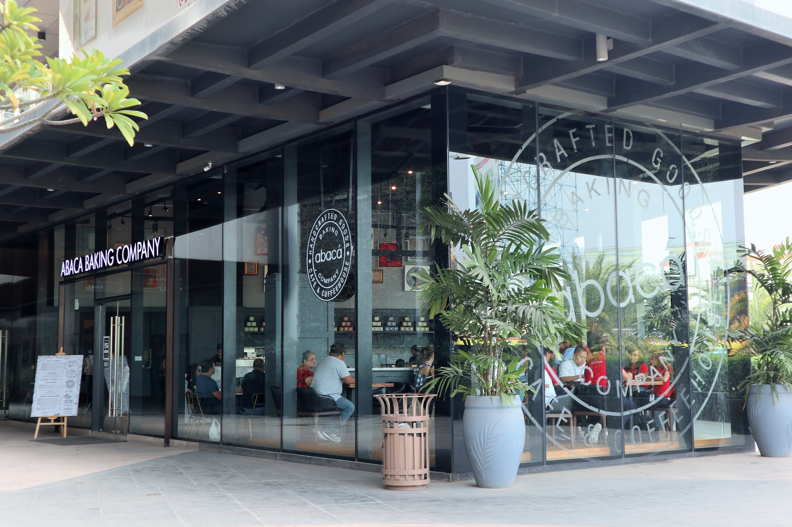
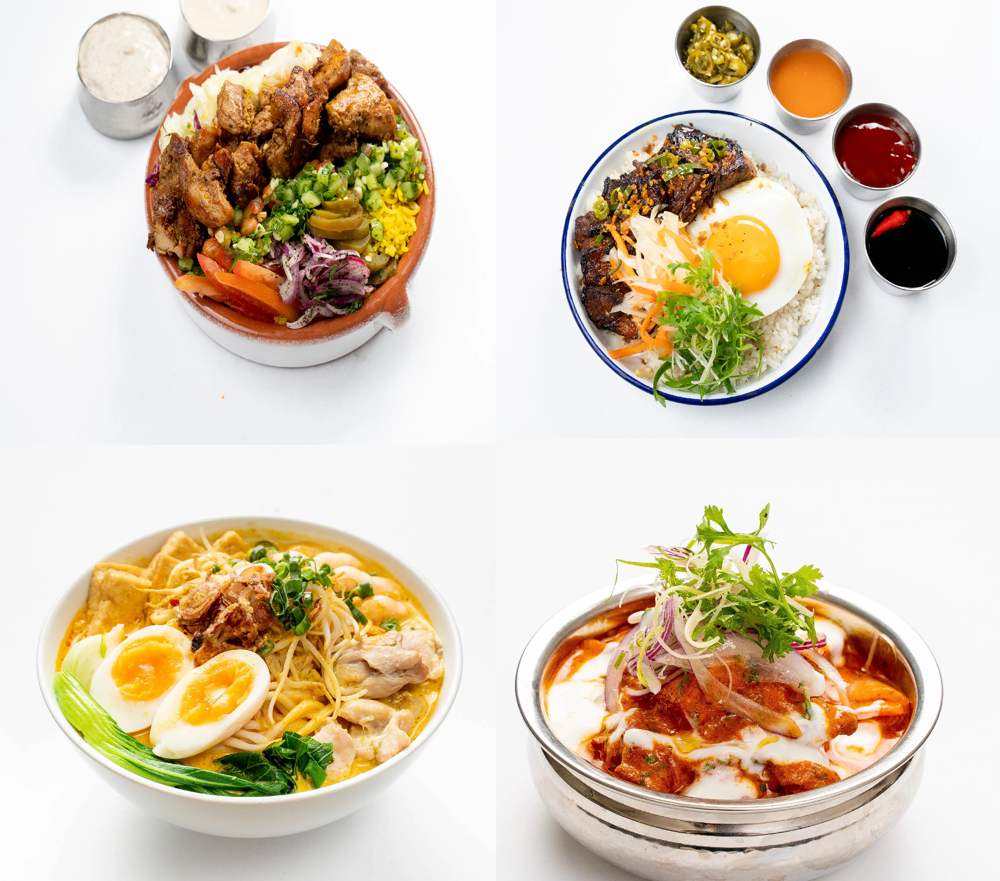

MOST KNOWN FAMOUS RESTAURANTS THAT YOU SHOULD VISIT:
LANTAW RESTAURANT

-Lantaw Restaurant in Compostela, Cebu is a popular Filipino dining restaurant that offers a variety of dishes, including Crispy Pata, Tinola Manok, Kinilaw, Calamares, Pinakbet, and Buko pie. The restaurant is situated near the sea and has a 2-story open seating area that offers a cool breeze from the ocean. The serving size is mostly just right for its price, and the food is delicious with an average rating of 4.5/5.
-Lantaw's BEST SELLER are CRISPY PATA, LIEMPO, BUTTERED SHRIMP, TUNA PANGA.
BEST SELLER

LOCATION
CNT LECHON

-CNT Lechon has many outlets spread across Cebu. Its costumers describe its specialty lechon as yummy and crunchy (the pig skin) till the last bite.
The lechon don’t need sauce, as the way it was roasted locked the unique taste and you don’t have to dip the meat or
skin, but you could ask some if you prefer to eat it with gravy.
Happy eaters swear the CnT Lechon as the finest and its salty taste is just enough for their taste-buds.
-CNT Lechon's BEST SELLER are LECHON and BONELESS LECHON.
BEST SELLER

LOCATION
CHIXBOY SA BUSAY

-Chixboy sa Busay is known for their very delicious Filipino grilled dishes. They offer the best bbq here in Cebu.
-Chixboy is just a simple BBQ food truck, who happens to have the perfect spot in Busay. Just a few meters after Temple of Leah, this new restaurant has gained so much popularity because of its amazing panoramic view of the city, and its very affordable yet gratifying BBQ menu!
-Chixboy sa Busay's BEST SELLER are GRILLED BBQ, BAKED SCALLOPS, HALO-HALO and SINUGBANG ISDA.
BEST SELLER

LOCATION
KRAB SEAFOOD RESTAURANT

-Krab Seafood Restaurant in Katipunan is a popular dining destination for seafood lovers. The restaurant is known for its fresh and flavorful seafood dishes, including a variety of crab options. The atmosphere is fun and casual, making it a great place to enjoy a meal with friends or family. Krab Seafood Restaurant in Katipunan is a must-visit destination for anyone looking for delicious and fresh seafood in a fun and casual atmosphere.
-Krab Seafood Restaurant BEST SELLER are BAKED SCALLOPS and CRABS.
BEST SELLER

LOCATION
ABACA BAKING COMPANY

-Abaca Baking Companyis the largest branch chain in Cebu City. It is a virtual food hall where you can get all sorts of great food.
-Abaca Baking Company is a from-scratch bakery and café concept that features the finest all butter croissants, baked goods, and pastries. Their breads are handcrafted and slow rise with their own starters, unbleached flours, and lots of love.
-Abaca Baking Company's BEST SELLER are TAPSILOG, CHOPPED GARLIC YOGHURT CHICKEN, CHICKEN TIKKA MASALA and LAKSA.
BEST SELLER
